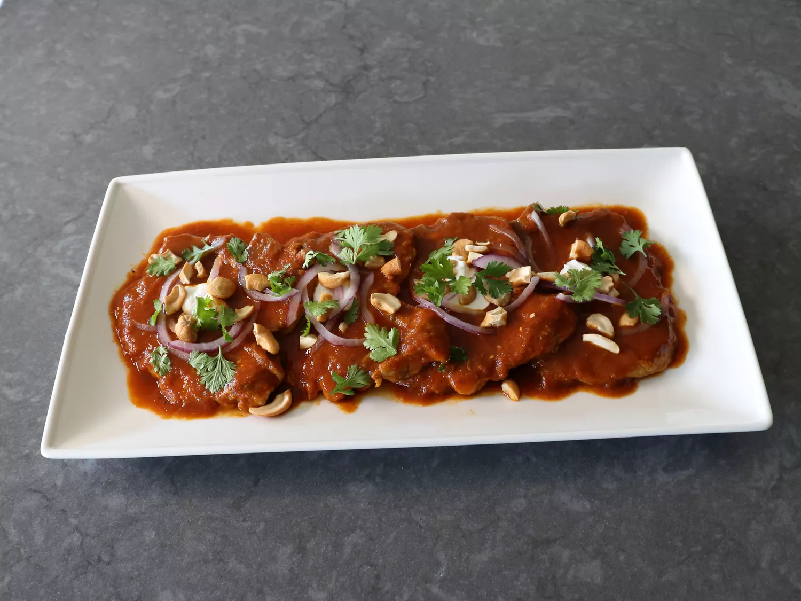

Fresh Tomate Curry

This fresh tomato curry sauce is the best thing to make with sweet, vine-ripened tomatoes after you've eaten your fill of them in their raw state. Simple, beautiful, and amazing, it's shown here with pork, but you can make this sauce for just about anything - chicken, beef, lamb, vegetables, or even pasta. All you need to do is adjust the simmering time.
Ingredients
- 4 thin-cut pork chops
- salt and freshly ground black pepper to taste
- 1 pinch cayenne, or to taste
- 1 tablespoon avocado oil or clarified butter
- 3/4 cup diced yellow onion
- 2 tablespoons finely diced jalapeno pepper
- 1 tablespoon minced ginger
- 3 cloves garlic, sliced
- 1/2 teaspoon salt, plus more to taste
- 1 teaspoon garam masala
- 1/2 teaspoon ground cumin
- 1/4 teaspoon ground turmeric
- 2 cups roughly chopped fresh tomatoes
- 1 teaspoon tamarind paste, or to taste
Garnish (optional)
- 2 tablespoons plain yogurt
- 1/4 cup sliced red onion
- 1/4 cup chopped roasted salted cashews
- 1/4 cup freshly torn cilantro leaves
Steps
- Use scissors to snip 4 or 5 small cuts around the edge of each chop to prevent curling. Season chops on both sides with salt, pepper, and cayenne. Add oil to a nonstick skillet over high heat, and sear pork chops on both sides until lightly browned, about 1 1/2 minutes per side. Remove meat to a plate, and reduce heat to medium.
- Add onions, jalapeno, ginger, garlic, and the 1/2 teaspoon salt to the pan. Cook, stirring, until onions start to turn translucent, 3 to 5 minutes. Add garam masala, cumin, and turmeric and cook, stirring, until spices are fragrant, about 1 minute.
- Add tomatoes and tamarind, and stir everything together. Add water; simmer until tomatoes completely soften and collapse, about 10 minutes.
- Place a mesh strainer over a bowl, and pour in the tomato mixture. Press and scrape with the back of a spoon or ladle until only the tomato seeds and skins remain in the strainer.
- Transfer the strained sauce back into the pan, and add the meat, and any accumulated juices back in. Bring to a gentle simmer over medium heat; then reduce heat to maintain a low simmer, and cook until meat is tender, about 5 minutes.
- Taste sauce for seasoning, and if desired, serve topped with yogurt, red onion, cashews, and cilantro leaves.